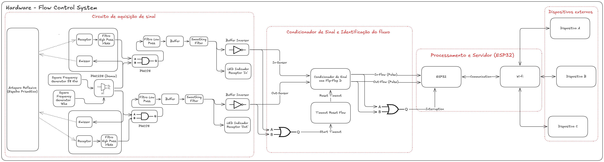

QPeriodGameUnity
Game project developed with Unity, focused on interactive gameplay and a polished experience.
View repository →Developer and technology enthusiast focused on computing, simulation, systems, graphics, and game development. My work combines programming, mathematics, physics, and hands-on experimentation across algorithms, engines, and embedded systems.
I am interested in building technical solutions with a strong foundation in science and programming. Over time, I have developed projects that span physical simulations, signal analysis, game development, computer graphics, and embedded systems.
Development
Areas of interest
Game project developed with Unity, focused on interactive gameplay and a polished experience.
View repository →
Engine-oriented project focused on game experience development, architecture, and experimentation.
View repository →
Proof of concept in Python to validate core game mechanics and system logic for a future project in Godot.
View repository →
Signal analysis tool focused on the Fourier Transform and interpretation of physical phenomena.
View repository →
Project that combines linear algebra and 3D rendering to demonstrate visual and computational concepts.
View repository →
Electronics and control project focused on embedded systems and automation logic.
View repository →Complementary projects that reinforce my foundation in programming, physics, mathematics, and experimentation.
If you want to talk about projects, technology, games, or engineering, I’m open to conversations.